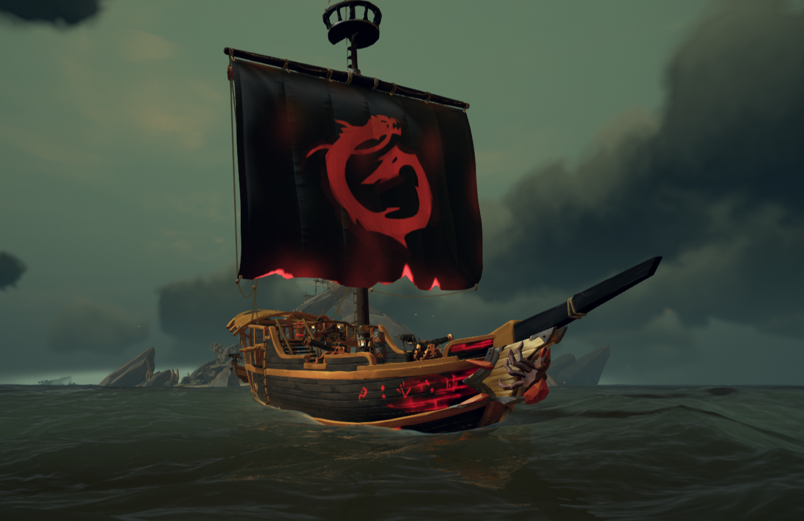
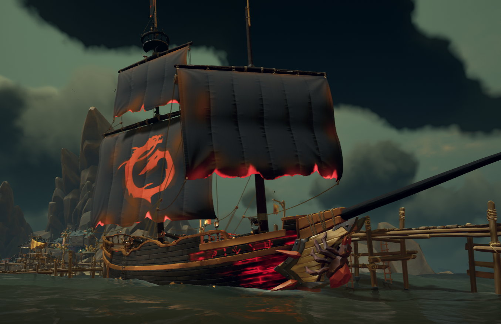
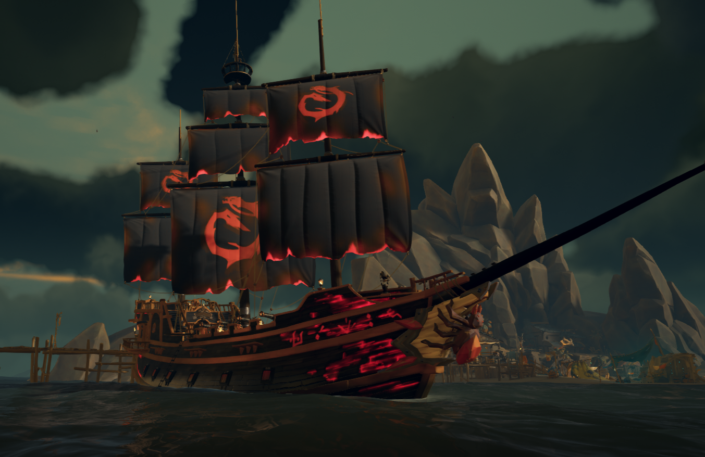

Os Barcos
Ahoy marujos, precisando escolher um barco para sua aventura? No Sea of Thieves temos 3 tipos de barcos: Chalupa, Bergantim e Galeao. Aqui voce pode ver a caracteristica de cada um e assim escolher o melhor para sua tripulacao.
Chalupa
As chalupas são pequenos barcos que, em troca de uma maior vulnerabilidade, oferecem excelente manobrabilidade. Com um canhão em cada lado, possuem um poder bélico inferior ao dos bergantins e galeões, o que pode torná-las menos eficazes em confrontos diretos. No entanto, sua capacidade de rápida movimentação permite que as chalupas se posicionem de maneira estratégica, obtendo vantagem sobre navios maiores e conseguindo, assim, afundá-los com relativa facilidade.
Em termos de velocidade, as chalupas, por terem menos velas, são as mais lentas dos três tipos de navios quando navegam a favor do vento. Contudo, por serem mais leves, tornam-se as mais rápidas ao velejar contra o vento. Em outras palavras, se você estiver sendo perseguido por um bergantim ou um galeão enquanto pilota uma chalupa, velejar contra o vento é a melhor estratégia, pois nenhum deles conseguirá alcançá-lo.
Bergantim
Os bergantins são navios versáteis, equilibrando poder de fogo, velocidade e manobrabilidade. Com dois mastros equipados com velas quadradas e triangulares, capazes de se mover com eficiência tanto a favor quanto contra o vento, sendo mais rapido que as chalupas a favor, e mais rapido que os galeões contra. Esta combinação de velas lhes confere uma excelente capacidade de perseguição e fuga.
Armados com 4 canhoes, 2 de cada lado, os bergantins têm uma capacidade bélica superior às chalupas, mas inferior aos imponentes galeões. Em combate, os bergantins podem usar sua velocidade e manobrabilidade para flanquear navios maiores, desferindo golpes rápidos e retirando-se antes de sofrerem danos significativos. No entanto, em confrontos diretos com navios maiores e mais pesadamente armados, como os galeões, os bergantins podem ser sobrepujados se não conseguirem capitalizar sua agilidade.
Contra navios menores, como chalupas, os bergantins apresentam uma pequena vantagem. Sua maior quantidade de canhões e maior resistência permitem que eles suportem os ataques ágeis dos barcos menores e, em muitos casos, os superem em combate direto. Além disso, a capacidade de manobrar relativamente bem, mesmo em confrontos acirrados, faz com que o bergantim possa acompanhar e neutralizar embarcações menores, evitando que estas explorem pontos fracos ou fujam para posições vantajosas. A chave para o sucesso contra esses inimigos menores está em usar a combinação de força de fogo e agilidade para pressionar continuamente, sem dar chance para que escapem ou ganhem uma posição de vantagem.
Galeao
Os galeões representam o ápice da força naval, sendo grandes e poderosamente armados. Construídos para dominar os mares, este navio possui 8 canhoes, 4 de cada lado, proporcionando um poder de fogo esmagador. Suas velas quadradas, montadas em três mastros, permitem que os galeões, a favor do vento, sejam os mais rapidos dos mares, embora, contra o vento, devido ao seu peso e estrutura massiva sejam os mais lentos.
Em combate, os galeões são verdadeiras fortalezas flutuantes, capazes de resistir a danos consideráveis enquanto destroem inimigos menores com seus numerosos canhões. No entanto, sua grandeza tem um custo: os galeões são menos manobráveis e vulneráveis a navios menores e mais ágeis, como as chalupas e bergantins, que podem tentar se aproximar e atacar pontos fracos. Em batalhas de frota, os galeões frequentemente formam o núcleo de combate, impondo respeito e controlando o campo de batalha com sua presença intimidadora.
Consideracoes
Os 3 sao otimos barcos mas cada um com suas limitacoes e pecurialidades, se ainda esta em duvida em qual embarcar na sua aventura temos um comparativo das especificacoes dos 3:
| Especificacoes dos barcos | |||
|---|---|---|---|
| Chalupa | Bergantim | Galeao | |
| Tamanho maximo da tripulacao | 2 | 3 | 4 |
| Mastros | 1 | 2 | 3 |
| Canhoes (total) | 2 | 4 | 8 |
| Estoque inical de bolas de canhao | 80 (40x2) | 90 (30x3) | 90 (30x3) |
| Bola Incendiaria, Tiro de Corrente, Bola de Estilhacos e sinalizador | 4 (2x2) | 6 (2x3) | 6 (2x3) |
| Estoque maximo de bolas de canhao | 9600 | 14,400 | 14,400 |
| Barris de comida | 2 | 2 | 2 |
| Estoque inical de banana | 16 | 16 | 16 |
| Estoque inical de coco | 16 | 16 | 16 |
| Estoque maximo de comida | 9600 | 9600 | 9600 |
| Barris de madeira | 1 | 1 | 1 |
| Estoque inical de madeira | 35 | 35 | 40 |
| Estoque maximo de madeira | 4800 | 4800 | 4800 |